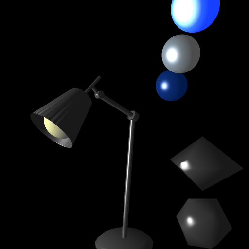
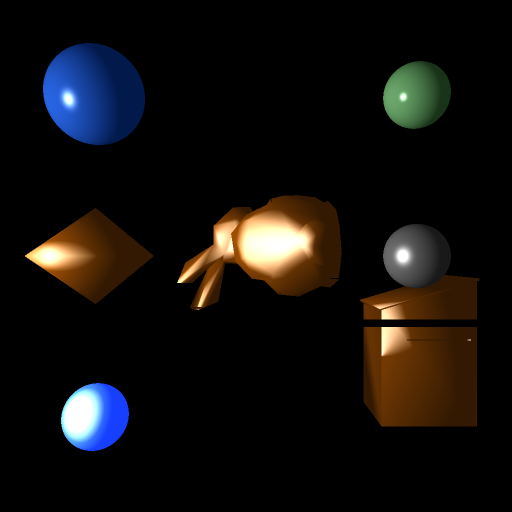
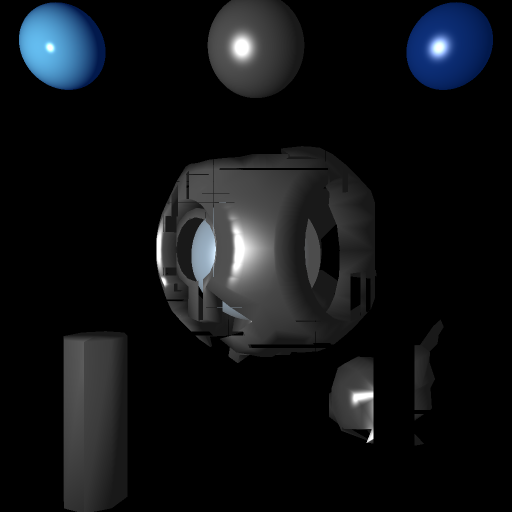
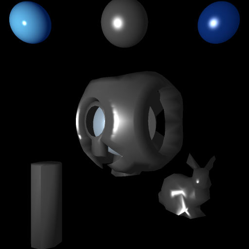

(Return to home)
3 Scenes were rendered with and without the Bounding Volume Hierarchies with axis-aligned boxes technique.
I have added some non-spatial-oriented optimizations between Assignment 2 and this one. These optimizations can be seen when comparing the performance times of renders in Assignment 2 to the non-BVH renders in this one.
A note about my renders is at the end of this webpage.
Scene 1: Desklamp (inspiration from Pixar)
5408 triangles total
Computation time: 559.235 sec - BVH

Computation time: 7614.86 sec - no BVH
Scene 2: Simple primitives
508 triangles total

Computation time: 307.124 sec - BVH
Computation time: 915.852 sec - no BVH
Scene 3: Guilty Spark
1176 triangles total

Computation time: 381.221 sec - BVH

Computation time: 1833.449 sec - no BVH
Note: I had some problems in my implementation of BVH. Some triangles are getting dropped, and I get these visual artifacts that only occur in horizontal or vertical patterns (easily seen in the difference between the pre and post BVH optimization pictures). It has been very hard to debug this and I was not able to debug these bugs in time. Although I am dissapointed that my raytracer optimization has this these bugs, I don't want to get any more late penalty points and so I am turning it in. With more code fixes which I intend to do soon, I believe that I can get my BVH implementation working the way I want it to. When I do, I will reupload my code on Bblearn and update this webpage, although i dont expect to earn any points back per the rubric because it is late.
I have seen a huge increase in performance by using Bounding Volume Hierarchies with axis-aligned boxes, by about a factor of 5! This a valueable learned skill that I took away from this assignment.